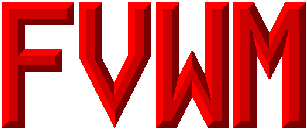

FVWM 2.2, the first official version of FVWM 2, is now available for download!
FVWM version 2 has been available in various stages of beta for years; now it has finally been officially released. Get your copy today!
FVWM is an ICCCM-compliant multiple virtual desktop window manager for
X11 created by Robert Nation, derived originally from twm
code. Thanks, Rob!
Rob then passed the torch on to Charles Hines, who passed the torch to
Brady Montz, who passed the torch to the fvwm-workers list.
Jason Tibbitts continues to provide infrastructure in the form of
mailing lists, a web site, an FTP site, a CVS tree, and anonymous rsync.